Last updated: 2022-06-01
Checks: 7 0
Knit directory:
paed-cf-cite-seq/
This reproducible R Markdown analysis was created with workflowr (version 1.7.0). The Checks tab describes the reproducibility checks that were applied when the results were created. The Past versions tab lists the development history.
Great! Since the R Markdown file has been committed to the Git repository, you know the exact version of the code that produced these results.
Great job! The global environment was empty. Objects defined in the global environment can affect the analysis in your R Markdown file in unknown ways. For reproduciblity it’s best to always run the code in an empty environment.
The command set.seed(20210524) was run prior to running the code in the R Markdown file.
Setting a seed ensures that any results that rely on randomness, e.g.
subsampling or permutations, are reproducible.
Great job! Recording the operating system, R version, and package versions is critical for reproducibility.
Nice! There were no cached chunks for this analysis, so you can be confident that you successfully produced the results during this run.
Great job! Using relative paths to the files within your workflowr project makes it easier to run your code on other machines.
Great! You are using Git for version control. Tracking code development and connecting the code version to the results is critical for reproducibility.
The results in this page were generated with repository version 3e51dc2. See the Past versions tab to see a history of the changes made to the R Markdown and HTML files.
Note that you need to be careful to ensure that all relevant files for the
analysis have been committed to Git prior to generating the results (you can
use wflow_publish or wflow_git_commit). workflowr only
checks the R Markdown file, but you know if there are other scripts or data
files that it depends on. Below is the status of the Git repository when the
results were generated:
Ignored files:
Ignored: .Rhistory
Ignored: .Rproj.user/
Ignored: analysis/obsolete/
Ignored: code/obsolete/
Ignored: data/190930_A00152_0150_BHTYCMDSXX/
Ignored: data/CellRanger/
Ignored: data/SCEs/02_ZILIONIS.sct_normalised.SEU.rds
Ignored: data/SCEs/03_C133_Neeland.demultiplexed.SCE.rds
Ignored: data/SCEs/03_C133_Neeland.emptyDrops.SCE.rds
Ignored: data/SCEs/03_C133_Neeland.nuclear_fraction_calls.rds
Ignored: data/SCEs/03_C133_Neeland.preprocessed.SCE.rds
Ignored: data/SCEs/03_CF_BAL_Pilot.CellRanger_v6.SCE.rds
Ignored: data/SCEs/03_CF_BAL_Pilot.emptyDrops.SCE.rds
Ignored: data/SCEs/03_CF_BAL_Pilot.nuclear_fraction_calls.rds
Ignored: data/SCEs/03_CF_BAL_Pilot.preprocessed.SCE.rds
Ignored: data/SCEs/03_COMBO.clustered.SEU.rds
Ignored: data/SCEs/03_COMBO.clustered_annotated_macrophages_diet.SEU.rds
Ignored: data/SCEs/03_COMBO.clustered_annotated_others_diet.SEU.rds
Ignored: data/SCEs/03_COMBO.clustered_annotated_tcells_diet.SEU.rds
Ignored: data/SCEs/03_COMBO.clustered_azimuth.SEU.rds
Ignored: data/SCEs/03_COMBO.clustered_azimuth_v2.SEU.rds
Ignored: data/SCEs/03_COMBO.clustered_diet.SEU.rds
Ignored: data/SCEs/03_COMBO.integrated.SEU.rds
Ignored: data/SCEs/03_COMBO.zilionis_mapped.SEU.rds
Ignored: data/SCEs/04_C133_Neeland.adt_dsb_normalised.rds
Ignored: data/SCEs/04_C133_Neeland.adt_integrated.rds
Ignored: data/SCEs/04_C133_Neeland.all_integrated.SEU.rds
Ignored: data/SCEs/04_CF_BAL_Pilot.transfer_adt.SEU.rds
Ignored: data/SCEs/04_COMBO.clean_clustered.SEU.rds
Ignored: data/SCEs/04_COMBO.clean_clustered.SEU_bk.rds
Ignored: data/SCEs/04_COMBO.clean_integrated.SEU.rds
Ignored: data/SCEs/04_COMBO.clean_integrated.SEU_bk.rds
Ignored: data/SCEs/04_COMBO.clean_macrophages_diet.SEU.rds
Ignored: data/SCEs/04_COMBO.clean_others_diet.SEU.rds
Ignored: data/SCEs/04_COMBO.clean_tcells_diet.SEU.rds
Ignored: data/SCEs/04_COMBO.clustered_annotated_adt_diet.SEU.rds
Ignored: data/SCEs/04_COMBO.clustered_annotated_lung_diet.SEU.rds
Ignored: data/SCEs/04_COMBO.clustered_annotated_macrophages_diet.SEU.rds
Ignored: data/SCEs/04_COMBO.clustered_annotated_others_diet.SEU.rds
Ignored: data/SCEs/04_COMBO.clustered_annotated_tcells_diet.SEU.rds
Ignored: data/SCEs/04_COMBO.macrophages_clustered.SEU.rds
Ignored: data/SCEs/04_COMBO.macrophages_integrated.SEU.rds
Ignored: data/SCEs/04_COMBO.others_clustered.SEU.rds
Ignored: data/SCEs/04_COMBO.others_integrated.SEU.rds
Ignored: data/SCEs/04_COMBO.tcells_clustered.SEU.rds
Ignored: data/SCEs/04_COMBO.tcells_integrated.SEU.rds
Ignored: data/SCEs/05_COMBO.clean_macrophages_diet.SEU.rds
Ignored: data/SCEs/05_COMBO.clean_others_diet.SEU.rds
Ignored: data/SCEs/05_COMBO.clean_tcells_diet.SEU.rds
Ignored: data/SCEs/05_COMBO.macrophages_clustered.SEU.rds
Ignored: data/SCEs/05_COMBO.macrophages_integrated.SEU.rds
Ignored: data/SCEs/05_COMBO.others_clustered.SEU.rds
Ignored: data/SCEs/05_COMBO.others_integrated.SEU.rds
Ignored: data/SCEs/05_COMBO.tcells_clustered.SEU.rds
Ignored: data/SCEs/05_COMBO.tcells_integrated.SEU.rds
Ignored: data/SCEs/C133_Neeland.CellRanger.SCE.rds
Ignored: data/SCEs/obsolete/
Ignored: data/cellsnp-lite-revised/
Ignored: data/emptyDrops-revised/
Ignored: data/emptyDrops/
Ignored: data/obsolete/
Ignored: data/sample_sheets/obsolete/
Ignored: data/vireo-revised/
Ignored: renv/library/
Ignored: renv/staging/
Ignored: wflow_background.R
Untracked files:
Untracked: analysis/05_COMBO.expression_analysis.Rmd
Untracked: analysis/05_COMBO.postprocess_all.Rmd
Untracked: data/GSE127465_RAW/
Untracked: output/DEGs-New/
Untracked: output/DEGs/
Untracked: output/marker-analysis-mod/
Untracked: output/marker-analysis/
Unstaged changes:
Modified: .gitignore
Modified: README.md
Modified: analysis/03_C133_Neeland.emptyDrops.Rmd
Modified: analysis/03_C133_Neeland.preprocess.Rmd
Modified: analysis/03_CF_BAL_Pilot.emptyDrops.Rmd
Modified: analysis/03_CF_BAL_Pilot.preprocess.Rmd
Modified: analysis/03_COMBO.clustering_annotation.Rmd
Modified: analysis/04_COMBO.transfer_proteins.Rmd
Modified: analysis/05_COMBO.postprocess_tcells.Rmd
Modified: analysis/_site.yml
Modified: data/TNK_subcluster_annotation_29.05.22.csv
Modified: renv.lock
Modified: renv/.gitignore
Modified: renv/activate.R
Modified: renv/settings.dcf
Note that any generated files, e.g. HTML, png, CSS, etc., are not included in this status report because it is ok for generated content to have uncommitted changes.
These are the previous versions of the repository in which changes were made
to the R Markdown (analysis/04_COMBO.postprocess_all.Rmd) and HTML (docs/04_COMBO.postprocess_all.html)
files. If you’ve configured a remote Git repository (see
?wflow_git_remote), click on the hyperlinks in the table below to
view the files as they were in that past version.
| File | Version | Author | Date | Message |
|---|---|---|---|---|
| html | 3e51dc2 | Jovana Maksimovic | 2022-06-01 | Build site. |
| html | 143d61f | Jovana Maksimovic | 2022-05-19 | Build site. |
| Rmd | c7619f4 | Jovana Maksimovic | 2022-05-19 | wflow_publish(c("analysis/04_COMBO.postprocess_all.Rmd")) |
| html | 88bd980 | Jovana Maksimovic | 2022-05-10 | Build site. |
| Rmd | 695f19d | Jovana Maksimovic | 2022-05-10 | wflow_publish("analysis/04_COMBO.postprocess_all.Rmd") |
library(Seurat)
library(tidyverse)
library(here)
library(glue)
library(DropletUtils)
library(scran)
library(scater)
library(scuttle)
library(Matrix)
library(edgeR)
library(patchwork)
library(AnnotationHub)
library(tidyHeatmap)
library(Cepo)
library(paletteer)
library(ensembldb)
library(org.Hs.eg.db)
library(glmGamPoi)
library(BiocParallel)
library(janitor)
library(scales)
library(speckle)
source(here("code/utility.R"))
source(here("code/helper_functions.R"))
set.seed(42)
options(scipen=999)
options(future.globals.maxSize = 6500 * 1024^2)seu1 <- readRDS(here("data/SCEs/04_COMBO.clean_macrophages_diet.SEU.rds"))
seu2 <- readRDS(here("data/SCEs/04_COMBO.clean_tcells_diet.SEU.rds"))
seu3 <- readRDS(here("data/SCEs/04_COMBO.clean_others_diet.SEU.rds"))
seu <- merge(seu1, y = c(seu2, seu3))
seuAn object of class Seurat
15900 features across 44828 samples within 3 assays
Active assay: RNA (15578 features, 0 variable features)
2 other assays present: ADT.dsb, ADT.raw used (Mb) gc trigger (Mb) max used (Mb)
Ncells 12360526 660.2 21924487 1170.9 13876996 741.2
Vcells 496627256 3789.0 1406429709 10730.3 1250799247 9542.9DefaultAssay(seu) <- "RNA"
seu <- NormalizeData(seu) %>%
FindVariableFeatures() %>%
ScaleData() %>%
RunPCA(verbose = FALSE, dims = 1:30) %>%
RunUMAP(verbose = FALSE, dims = 1:30)DimPlot(seu, group.by = "experiment", combine = FALSE)[[1]]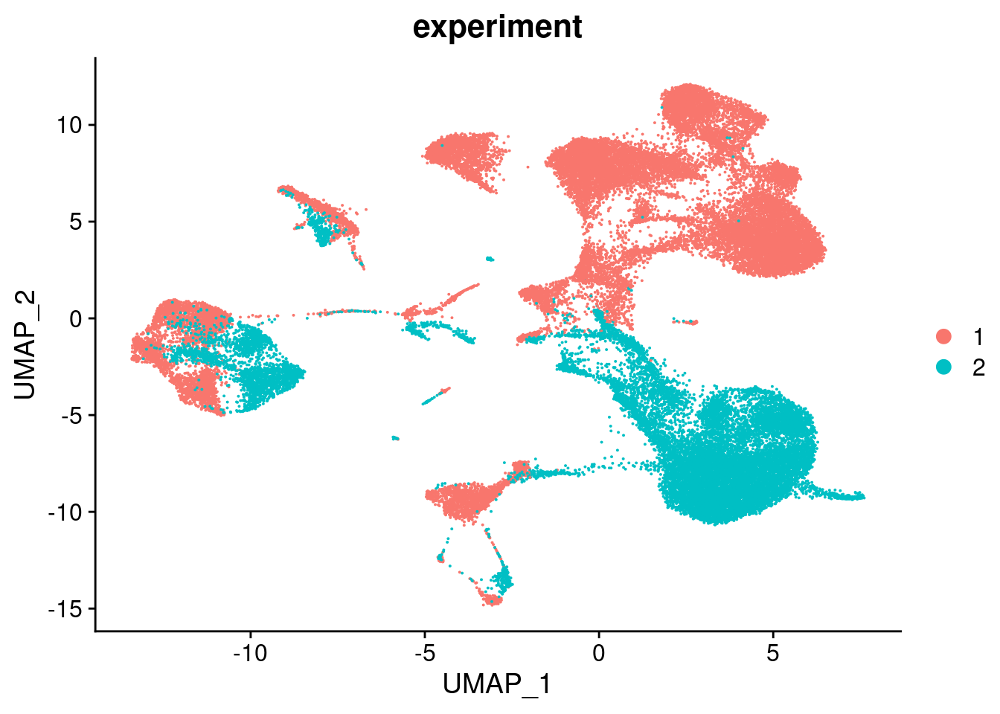
| Version | Author | Date |
|---|---|---|
| 88bd980 | Jovana Maksimovic | 2022-05-10 |
Normalise the data using SCTransform and integrate across batches/individuals.
out <- here("data/SCEs/04_COMBO.clean_integrated.SEU.rds")
if(!file.exists(out)) {
seuInt <- intDat(seu, split = "donor", type = "RNA",
reference = unique(as.character(seu$capture[seu$experiment == 1])))
saveRDS(seuInt, file = out)
} else {
seuInt <- readRDS(out)
} used (Mb) gc trigger (Mb) max used (Mb)
Ncells 12500079 667.6 21924487 1170.9 18504643 988.3
Vcells 2016707735 15386.3 2506780827 19125.3 2016762748 15386.7seuInt <- RunPCA(seuInt, npcs = 30, verbose = FALSE)
seuInt <- RunUMAP(seuInt, verbose = FALSE, dims = 1:30)
DimPlot(seuInt, group.by = "experiment", combine = FALSE)[[1]]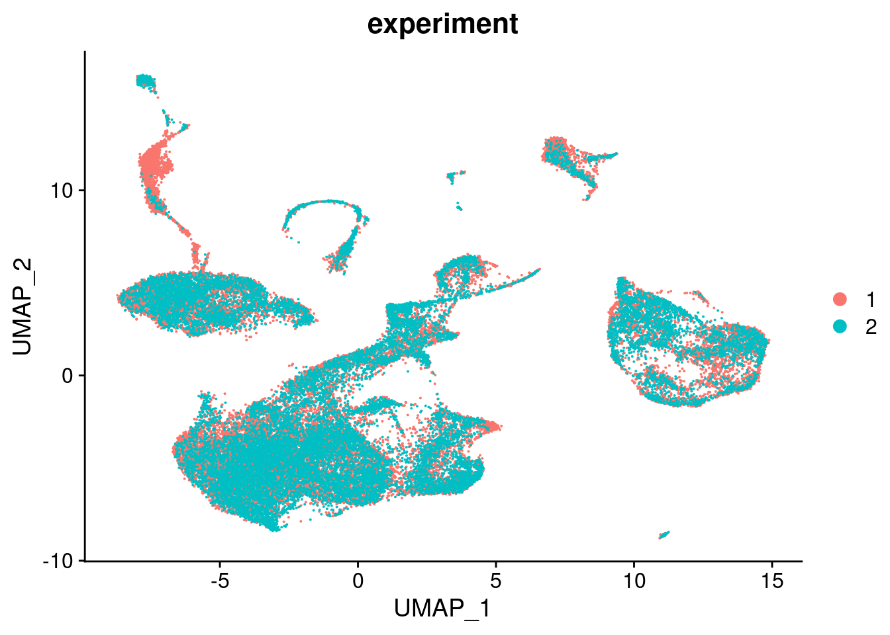
p1 <- DimPlot(seuInt, reduction = "pca", group.by = "donor")
p2 <- DimPlot(seuInt, reduction = "pca", dims = c(1,3), group.by = "donor")
p3 <- DimPlot(seuInt, reduction = "pca", dims = c(2,3), group.by = "donor")
p4 <- DimPlot(seuInt, reduction = "pca", dims = c(3,4), group.by = "donor")
((p1 | p2) / (p3 | p4)) + plot_layout(guides = "collect") &
theme(legend.text = element_text(size = 8),
plot.title = element_text(size = 10),
axis.title = element_text(size = 9),
axis.text = element_text(size = 8))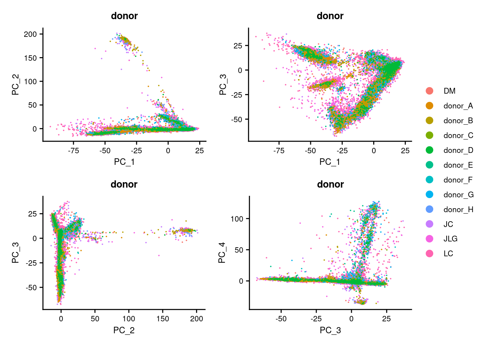
DimHeatmap(seuInt, dims = 1:30, cells = 500, balanced = TRUE)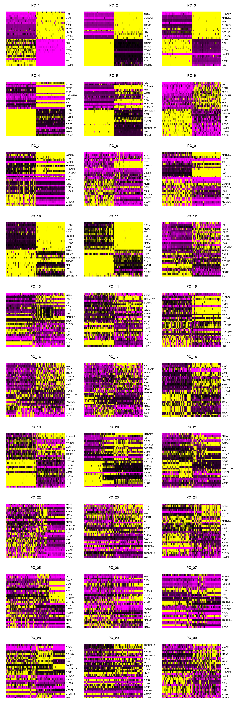
ElbowPlot(seuInt, ndims = 30)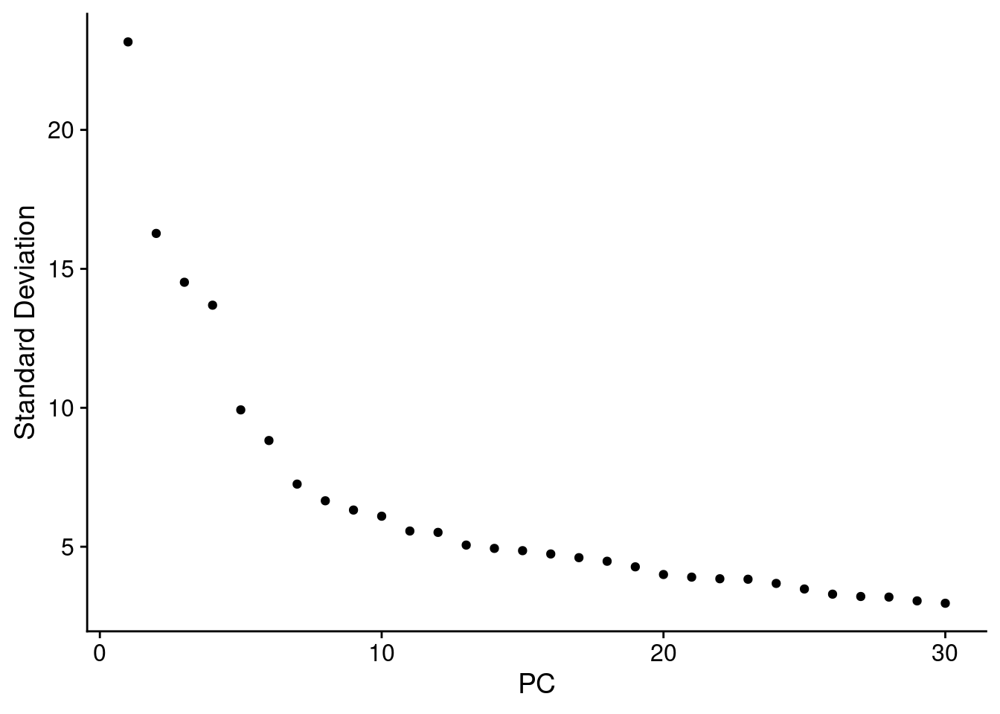
out <- here("data/SCEs/04_COMBO.clean_clustered.SEU.rds")
if(!file.exists(out)) {
seuInt <- FindNeighbors(seuInt, reduction = "pca", dims = 1:30)
seuInt <- FindClusters(seuInt, algorithm = 3,
resolution = 1)
seuInt <- RunUMAP(seuInt, dims = 1:30)
saveRDS(seuInt, file = out)
} else {
seuInt <- readRDS(out)
}options(ggrepel.max.overlaps = Inf)
DimPlot(seuInt, reduction = 'umap', label = TRUE, repel = TRUE,
label.size = 2.5, group.by = "integrated_snn_res.1") + NoLegend()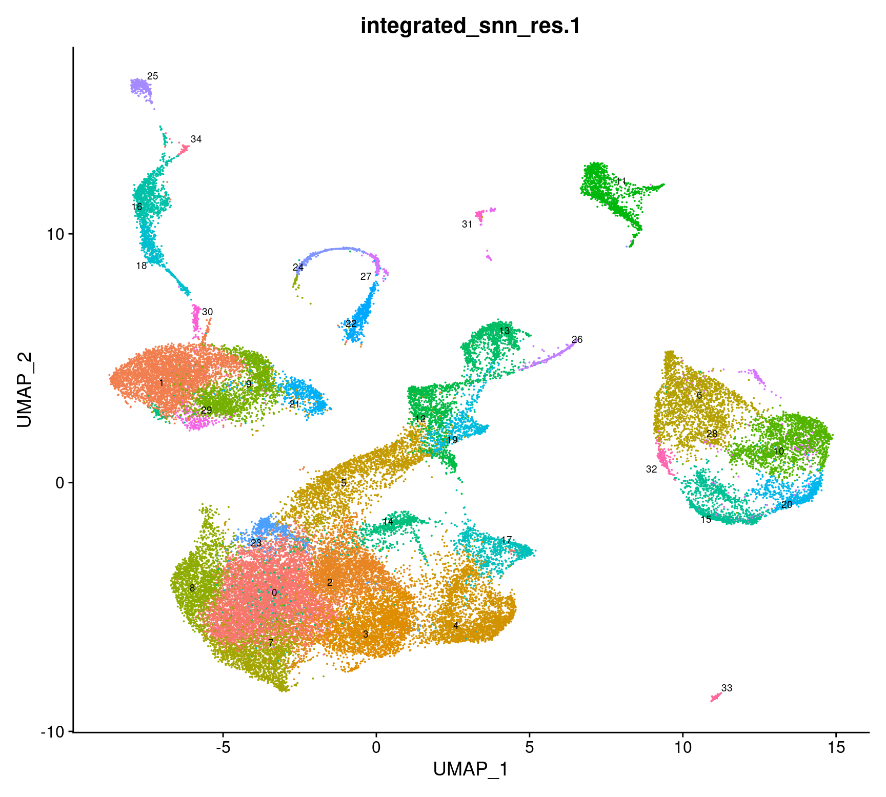
DimPlot(seuInt, reduction = 'umap', label = TRUE, repel = TRUE,
label.size = 2.5, group.by = "Annotation") + NoLegend()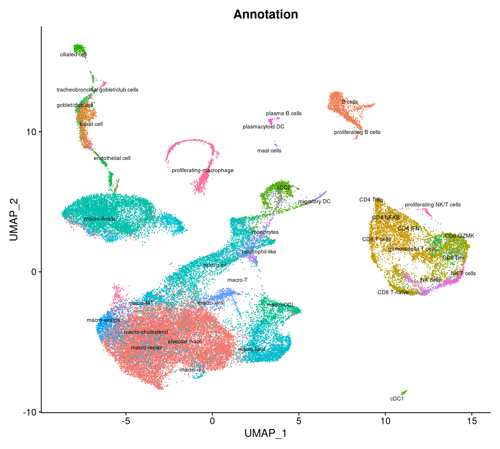
DimPlot(seuInt, reduction = 'umap', label = TRUE, repel = TRUE,
label.size = 3, group.by = "Broad",
cols = paletteer::paletteer_d("miscpalettes::pastel",
length(unique(seuInt$Broad)))) +
NoLegend() -> f1b
f1b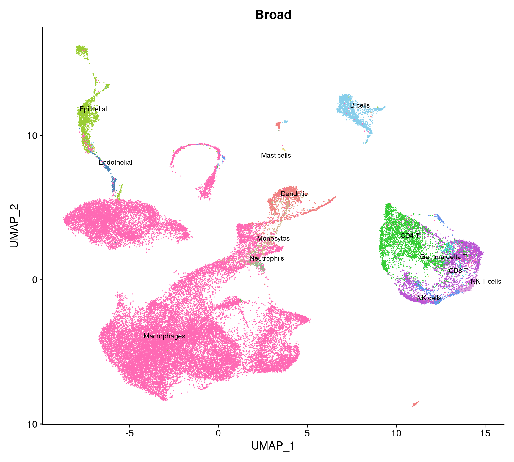
Import clinical characteristics and patient information and associate with genetic_donor IDs.
info <- read.csv(file = here("data/sample_sheets/Sample_information.csv"))
tab <- table(seuInt$HTO, seuInt$donor)
apply(tab, 2, function(x){
names(which(x == max(x)))
}) %>% data.frame %>%
dplyr::rename("HTO" = ".") %>%
rownames_to_column(var = "donor") %>%
inner_join(info, by = c("HTO" = "Sample")) %>%
mutate(Batch = factor(Batch)) -> info
info %>% knitr::kable()| donor | HTO | Participant | Sex | Age | Disease | Batch |
|---|---|---|---|---|---|---|
| DM | DM | B1_CF | M | 2.99 | CF | 1 |
| donor_A | Human_HTO_8 | L2_CF | M | 5.95 | CF | 2 |
| donor_B | Human_HTO_1 | E2_CF | F | 5.99 | CF | 2 |
| donor_C | Human_HTO_4 | H2_CF | F | 5.89 | CF | 2 |
| donor_D | Human_HTO_6 | J2_CF | M | 5.05 | CF | 2 |
| donor_E | Human_HTO_3 | G2_CF | F | 4.91 | CF | 2 |
| donor_F | Human_HTO_5 | I2_CF | F | 5.93 | CF | 2 |
| donor_G | Human_HTO_2 | F2_CF | F | 6.02 | CF | 2 |
| donor_H | Human_HTO_7 | K2_CF | M | 4.92 | CF | 2 |
| JC | JC | C1_CF | M | 2.99 | CF | 1 |
| JLG | JLG | A1_Ctrl | M | 3.00 | Ctrl | 1 |
| LC | LC | D1_CF | M | 3.03 | CF | 1 |
# Differences in cell type proportions
props <- getTransformedProps(clusters = seuInt$Broad,
sample = seuInt$donor, transform="asin")
props$Proportions %>% knitr::kable()| DM | donor_A | donor_B | donor_C | donor_D | donor_E | donor_F | donor_G | donor_H | JC | JLG | LC | |
|---|---|---|---|---|---|---|---|---|---|---|---|---|
| B cells | 0.1274095 | 0.0598920 | 0.0912835 | 0.0045965 | 0.0132275 | 0.0035189 | 0.0028694 | 0.0066745 | 0.0026189 | 0.0186625 | 0.0418380 | 0.0092654 |
| CD4 T | 0.0818054 | 0.1840943 | 0.0267673 | 0.1021450 | 0.0328042 | 0.0179143 | 0.0190100 | 0.1884570 | 0.0165866 | 0.0499611 | 0.0565901 | 0.0372822 |
| CD8 T | 0.0554772 | 0.0731468 | 0.0343171 | 0.0633299 | 0.0354497 | 0.0166347 | 0.0107604 | 0.1126816 | 0.0192056 | 0.0260498 | 0.0810157 | 0.0442312 |
| Dendritic | 0.0110484 | 0.0829651 | 0.0439259 | 0.0199183 | 0.0317460 | 0.0201536 | 0.0136298 | 0.0569297 | 0.0192056 | 0.0365474 | 0.0644498 | 0.0236047 |
| Endothelial | 0.0380818 | 0.0000000 | 0.0000000 | 0.0000000 | 0.0000000 | 0.0000000 | 0.0000000 | 0.0000000 | 0.0000000 | 0.0303266 | 0.0000000 | 0.0000000 |
| Epithelial | 0.1687823 | 0.0260187 | 0.0514756 | 0.0020429 | 0.0037037 | 0.0025592 | 0.0003587 | 0.0027483 | 0.0283719 | 0.1459953 | 0.0112455 | 0.0007721 |
| Gamma delta T | 0.0119887 | 0.0014728 | 0.0000000 | 0.0056180 | 0.0005291 | 0.0000000 | 0.0003587 | 0.0247350 | 0.0008730 | 0.0034992 | 0.0024184 | 0.0024266 |
| Macrophages | 0.4694405 | 0.5002455 | 0.7083047 | 0.7808989 | 0.8687831 | 0.9280230 | 0.9386657 | 0.5622301 | 0.9000436 | 0.6485226 | 0.6964933 | 0.8641077 |
| Mast cells | 0.0021157 | 0.0103093 | 0.0041181 | 0.0000000 | 0.0000000 | 0.0000000 | 0.0000000 | 0.0000000 | 0.0004365 | 0.0005832 | 0.0007255 | 0.0000000 |
| Monocytes | 0.0023507 | 0.0117820 | 0.0068634 | 0.0051073 | 0.0074074 | 0.0076775 | 0.0111191 | 0.0098155 | 0.0065474 | 0.0056376 | 0.0249093 | 0.0078315 |
| Neutrophils | 0.0042313 | 0.0289642 | 0.0089224 | 0.0015322 | 0.0031746 | 0.0003199 | 0.0003587 | 0.0011779 | 0.0004365 | 0.0021384 | 0.0014510 | 0.0005515 |
| NK cells | 0.0190409 | 0.0098184 | 0.0061771 | 0.0086823 | 0.0010582 | 0.0031990 | 0.0021521 | 0.0286612 | 0.0017460 | 0.0110809 | 0.0089480 | 0.0072799 |
| NK T cells | 0.0082276 | 0.0112911 | 0.0178449 | 0.0061287 | 0.0021164 | 0.0000000 | 0.0007174 | 0.0058893 | 0.0039284 | 0.0209953 | 0.0099154 | 0.0026473 |
props$Proportions %>%
data.frame %>%
inner_join(info, by = c("sample" = "donor")) %>%
ggplot(aes(x = Participant, y = Freq, fill = clusters)) +
geom_bar(stat = "identity") +
theme_classic() +
theme(axis.text.x = element_text(angle = 90,
vjust = 0.5,
hjust = 1),
legend.text = element_text(size = 8)) +
labs(y = "Proportion", fill = "Cell Label") +
paletteer::scale_fill_paletteer_d("miscpalettes::pastel") -> f1c
f1c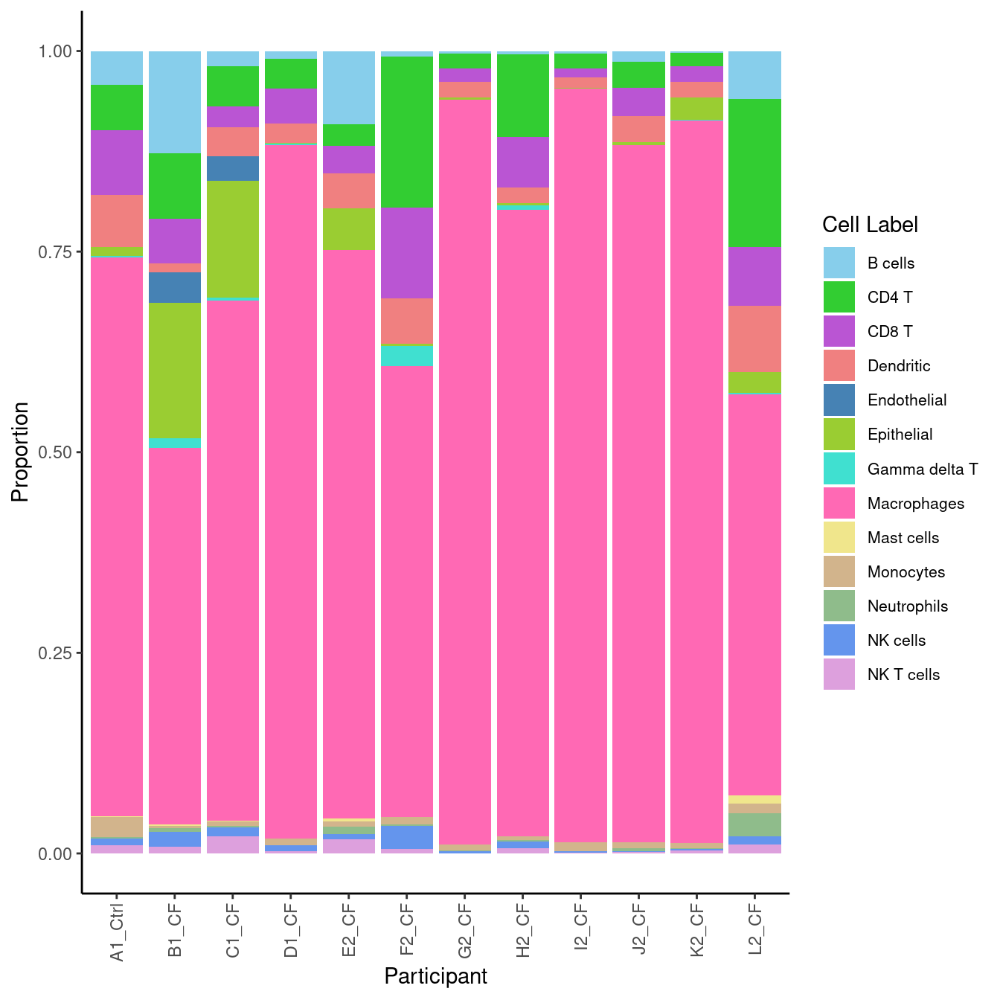
| Version | Author | Date |
|---|---|---|
| 143d61f | Jovana Maksimovic | 2022-05-19 |
Stripchart of cell type proportion, stratified by disease.
props$Proportions %>% data.frame %>%
left_join(info,
by = c("sample" = "donor")) %>%
ggplot(aes(x = Disease,
y = Freq,
colour = Age)) +
geom_jitter(stat = "identity",
width = 0.15,
size = 2.25,
aes(shape = as.factor(Batch))) +
stat_summary(aes(x = Disease, y = Freq),
inherit.aes = FALSE,
fun = "mean",
geom = "crossbar",
size = 0.1) +
theme(axis.text.x = element_text(angle = 90,
hjust = 1,
vjust = 0.5),
legend.position = "bottom",
legend.direction = "horizontal",
strip.text = element_text(size = 6),
axis.text = element_text(size = 6)) +
labs(x = "Disease", y = "Proportion",
shape = "Batch", colour = "Age") +
scale_color_gradientn(colours = paletteer_d(palette = "RColorBrewer::Spectral")) +
facet_wrap(~ clusters, scales = "free_y") -> p1
p1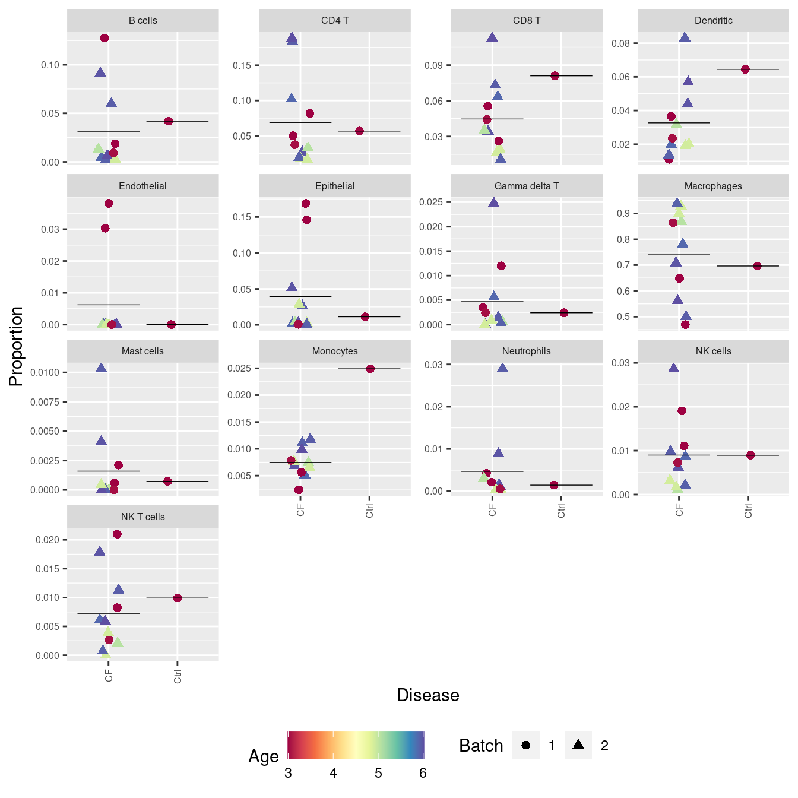
We can set up a design matrix taking into account various aspects of the data,
such as disease severity, treatment and Batch.
Please note that the way that propeller has been designed is such that the
group information is always first in the design matrix specification, and
there is NO intercept.
Group <- factor(info$Disease)
Batch <- factor(info$Batch)
design <- model.matrix(~ 0 + Group + Batch)
colnames(design) <- c("CF", "Ctrl", "Batch")
design CF Ctrl Batch
1 1 0 0
2 1 0 1
3 1 0 1
4 1 0 1
5 1 0 1
6 1 0 1
7 1 0 1
8 1 0 1
9 1 0 1
10 1 0 0
11 0 1 0
12 1 0 0
attr(,"assign")
[1] 1 1 2
attr(,"contrasts")
attr(,"contrasts")$Group
[1] "contr.treatment"
attr(,"contrasts")$Batch
[1] "contr.treatment"We can use the propeller.ttest function and specify a contrast that tests for this
comparison with our design matrix.
mycontr <- makeContrasts(CvCF = Ctrl-CF,
levels = design)
mycontr Contrasts
Levels CvCF
CF -1
Ctrl 1
Batch 0propeller.ttest(props, design, contrasts = mycontr[,1], robust=TRUE, trend=FALSE,
sort=TRUE) %>% knitr::kable()| PropMean.CF | PropMean.Ctrl | PropRatio | Tstatistic | P.Value | FDR | |
|---|---|---|---|---|---|---|
| Monocytes | 0.0074672 | 0.0249093 | 3.3358226 | 2.8767177 | 0.0148685 | 0.1932911 |
| Endothelial | 0.0062189 | 0.0000000 | 0.0000000 | -2.1029043 | 0.0589627 | 0.3832574 |
| Dendritic | 0.0326977 | 0.0644498 | 1.9710818 | 1.6321202 | 0.1305424 | 0.5656839 |
| Epithelial | 0.0393481 | 0.0112455 | 0.2857946 | -1.3220135 | 0.2132635 | 0.6931065 |
| CD8 T | 0.0446622 | 0.0810157 | 1.8139671 | 1.0388744 | 0.3208615 | 0.8342398 |
| Gamma delta T | 0.0046819 | 0.0024184 | 0.5165364 | -0.4142640 | 0.6865363 | 0.9789793 |
| NK cells | 0.0089905 | 0.0089480 | 0.9952695 | -0.2986285 | 0.7707140 | 0.9789793 |
| Neutrophils | 0.0047098 | 0.0014510 | 0.3080884 | -0.1223788 | 0.9047764 | 0.9789793 |
| Macrophages | 0.7426605 | 0.6964933 | 0.9378355 | 0.1177754 | 0.9083901 | 0.9789793 |
| Mast cells | 0.0015966 | 0.0007255 | 0.4544098 | 0.0779002 | 0.9392875 | 0.9789793 |
| NK T cells | 0.0072533 | 0.0099154 | 1.3670132 | 0.0730728 | 0.9430423 | 0.9789793 |
| B cells | 0.0309108 | 0.0418380 | 1.3535070 | 0.0549004 | 0.9572122 | 0.9789793 |
| CD4 T | 0.0688025 | 0.0565901 | 0.8225005 | 0.0269602 | 0.9789793 | 0.9789793 |
flow <- read_csv(file = here("data/CITE-seq_pilot_proportions_final.csv"))
flow %>%
dplyr::rename(HTO = "...1") %>%
pivot_longer(cols = -HTO,
names_to = "cell") %>%
mutate(value = value / 100) -> flowProps
flowProps %>% head(n = 10) %>% knitr::kable()| HTO | cell | value |
|---|---|---|
| Human_HTO_2 | B cells | 0.0076608 |
| Human_HTO_2 | CD4 T | 0.1901783 |
| Human_HTO_2 | CD8 T | 0.0791989 |
| Human_HTO_2 | Dendritic | 0.0157482 |
| Human_HTO_2 | Macrophages | 0.5330048 |
| Human_HTO_2 | Monocytes | 0.0164748 |
| Human_HTO_2 | Neutrophils | 0.0227456 |
| Human_HTO_2 | Epithelial | 0.0006160 |
| Human_HTO_3 | B cells | 0.0032860 |
| Human_HTO_3 | CD4 T | 0.0269643 |
props$Proportions %>%
as.data.frame.matrix %>%
data.frame %>%
rownames_to_column(var = "cell") %>%
pivot_longer(cols = -cell) %>%
inner_join(dplyr::select(info, donor, HTO), by = c("name" = "donor")) %>%
dplyr::select(-name) -> scProps
scProps %>% head(n = 10) %>% knitr::kable()| cell | value | HTO |
|---|---|---|
| B cells | 0.1274095 | DM |
| B cells | 0.0598920 | Human_HTO_8 |
| B cells | 0.0912835 | Human_HTO_1 |
| B cells | 0.0045965 | Human_HTO_4 |
| B cells | 0.0132275 | Human_HTO_6 |
| B cells | 0.0035189 | Human_HTO_3 |
| B cells | 0.0028694 | Human_HTO_5 |
| B cells | 0.0066745 | Human_HTO_2 |
| B cells | 0.0026189 | Human_HTO_7 |
| B cells | 0.0186625 | JC |
Cepo cluster marker genescepoMarkers <- Cepo(seuInt[["RNA"]]@data,
seuInt$Broad,
exprsPct = 0.1,
logfc = 1)
sapply(1:ncol(cepoMarkers$stats), function(i){
names(sort(cepoMarkers$stats[,i], decreasing = TRUE))[1:20]
}) -> dat
colnames(dat) <- colnames(cepoMarkers$stats)
dat %>% knitr::kable()| B.cells | CD4.T | CD8.T | Dendritic | Endothelial | Epithelial | Gamma.delta.T | Macrophages | Mast.cells | Monocytes | Neutrophils | NK.cells | NK.T.cells |
|---|---|---|---|---|---|---|---|---|---|---|---|---|
| CD79A | BCL11B | CD8B | LGALS2 | SPARCL1 | AGR2 | GZMK | CYP27A1 | TPSAB1 | CLEC10A | FCN1 | TRDC | KLRC2 |
| TNFRSF13C | CD3G | CD8A | CLEC10A | ACKR1 | KRT17 | TRDC | MS4A4A | CPA3 | FPR3 | CD300E | XCL1 | KLRC1 |
| CD19 | CD3D | ZNF683 | CD1E | RAMP2 | FXYD3 | TRGC1 | PPARG | MS4A2 | CSF1R | LILRA5 | XCL2 | ZNF683 |
| MS4A1 | KLRB1 | LINC02446 | SERPINF1 | NNMT | KRT7 | KLRB1 | FFAR4 | SLC18A2 | FCGR2B | APOBEC3A | KLRB1 | LINC02446 |
| TNFRSF13B | CD3E | CD3G | AXL | CLDN5 | SMIM22 | GZMM | HNMT | HDC | MS4A6A | S100A12 | KLRC1 | KIR2DL4 |
| BANK1 | TRAC | CD3D | FPR3 | CLEC14A | KRT19 | KLRG1 | PARAL1 | GATA2 | FGL2 | IL1RN | GNLY | CD8B |
| SPIB | SPOCK2 | CD3E | CD86 | RAMP3 | CLDN4 | PRF1 | GPNMB | TPSB2 | LILRB3 | LILRB2 | TNFRSF18 | IFNG |
| FCRL5 | CD6 | KLRD1 | TSPAN33 | ADIRF | EPCAM | GZMA | FCGR1A | IL1RL1 | CLEC5A | FPR1 | KLRD1 | GNLY |
| PAX5 | TRBC1 | TRGC2 | CD1C | TM4SF18 | LCN2 | SPOCK2 | SLC7A7 | KIT | CLEC7A | VCAN | IL2RB | CD8A |
| TLR10 | CD2 | TRAC | FCER1A | VWF | TACSTD2 | SAMD3 | GPD1 | KCNH2 | SLC8A1 | VEGFA | KLRF1 | ITGA1 |
| LINC00926 | LCK | LCK | PKIB | TM4SF1 | SLPI | CD27 | LRP1 | SLC45A3 | TREM2 | AQP9 | CD7 | GZMB |
| FCRLA | TRBC2 | GZMM | SLC8A1 | CAV1 | CHST9 | CD3D | PHLDA3 | RHEX | IGSF6 | G0S2 | TXK | LINC01871 |
| CD22 | TNFRSF25 | GZMH | MS4A6A | DNASE1L3 | S100A2 | CD3G | TREM1 | SIGLEC6 | CD86 | IL1B | KRT81 | KLRD1 |
| VPREB3 | LINC01943 | KLRC2 | P2RY13 | NR2F2 | TMC5 | CD3E | PILRA | GCSAML | TGFBI | SEMA6B | SAMD3 | CD160 |
| CD79B | CD247 | CD7 | RNASE6 | TIMP3 | ELF3 | LAG3 | MSR1 | LIF | CPVL | LILRB1 | HOPX | GZMH |
| LINC02397 | GZMM | GZMA | PLD4 | RNASE1 | MUC16 | ZBTB16 | OLR1 | NTRK1 | F13A1 | C15orf48 | CD247 | SCML4 |
| IGHD | MAF | CD27 | GAS6 | CAVIN1 | TSPAN1 | CD247 | HP | TPSD1 | LILRB4 | CD93 | NCAM1 | CD3G |
| RALGPS2 | TRAT1 | CD2 | RAB32 | FAM167B | KRT8 | SLC4A10 | PCOLCE2 | CDK15 | FCGR2A | CSF3R | TRBC1 | PRF1 |
| FCRL2 | CTLA4 | TRBC1 | FGL2 | PALMD | CLDN3 | DPP4 | TCF7L2 | RGS13 | RAB31 | S100A8 | PRF1 | CD3D |
| BLK | IL32 | TRBC2 | IGSF6 | CAVIN2 | DSP | NKG7 | NCF2 | PBX1 | MNDA | ADGRE2 | NKG7 | DAPK2 |
Cepo marker gene dot plotGenes duplicated between clusters are excluded.
DefaultAssay(seuInt) <- "RNA"
maxGenes <- 5
sigGenes <- lapply(1:ncol(dat), function(i){
dat[,i][1:maxGenes]
})
sig <- unlist(sigGenes)
geneCols <- c(rep(rep(c("blue","black"), each = maxGenes),
ceiling(ncol(dat)/2)))[1:length(sig)][!duplicated(sig)]
geneCols <- rep(paletteer_d("miscpalettes::pastel", ncol(dat)),
each = maxGenes)[1:length(sig)][!duplicated(sig)]
pal <- paletteer::paletteer_d("vapoRwave::cool")
DotPlot(seuInt,
features = sig[!duplicated(sig)],
group.by = "Broad",
dot.scale = 2.5) +
FontSize(y.text = 8, x.text = 8) +
labs(y = element_blank(), x = element_blank()) +
theme(axis.text.x = element_text(color = geneCols,
angle = 90,
hjust = 1,
vjust = 0.5),
legend.text = element_text(size = 8),
legend.title = element_text(size = 10)) +
scale_color_gradient2(low = pal[1],
mid = pal[3],
high = pal[5]) -> f1d
f1d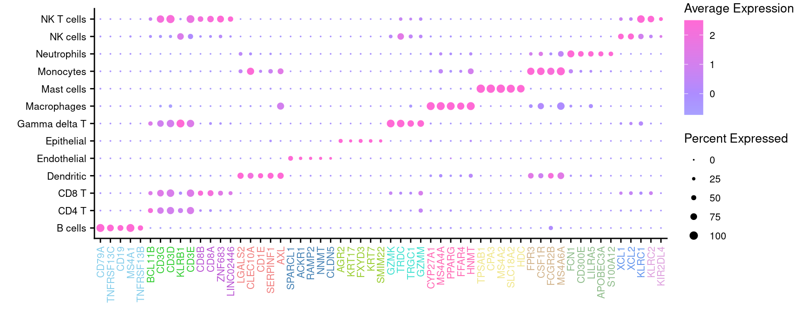
Seurat objectseuAdt <- readRDS(here("data",
"SCEs",
"04_COMBO.clustered_annotated_adt_diet.SEU.rds"))
seuAdt <- subset(seuAdt, cells = colnames(seuInt))
all(colnames(seuAdt) == colnames(seuInt))[1] TRUEseuInt[["ADT.dsb"]] <- seuAdt[["ADT.dsb"]]
seuInt[["ADT.raw"]] <- seuAdt[["ADT.raw"]]
seuIntAn object of class Seurat
34467 features across 44828 samples within 5 assays
Active assay: RNA (15578 features, 0 variable features)
4 other assays present: ADT.dsb, ADT.raw, SCT, integrated
2 dimensional reductions calculated: pca, umaprm(seuAdt)
gc() used (Mb) gc trigger (Mb) max used (Mb)
Ncells 12792652 683.3 21924487 1170.9 21924487 1170.9
Vcells 2918584192 22267.1 5198490161 39661.4 5196206788 39644.0prots <- read_csv(file = here("data",
"sample_sheets",
"TotalSeq-A_Universal_Cocktail_v1.0.csv")) %>%
dplyr::filter(grepl("^A0", id)) %>%
dplyr::filter(!grepl("[Ii]sotype", name)) adt <- read_csv(file = here("data/Proteins_broad_22.04.22.csv"))
adt <- adt[!duplicated(adt$DNA_ID),]
cbind(seuInt@meta.data,
as.data.frame(t(seuInt@assays$ADT.dsb@data))) %>%
dplyr::group_by(Broad, experiment) %>%
dplyr::summarize_at(.vars = adt$DNA_ID, .funs = median) %>%
pivot_longer(c(-Broad, -experiment), names_to = "ADT",
values_to = "DSB Norm. Exp.") %>%
left_join(adt, by = c("ADT" = "DNA_ID")) %>%
dplyr::rename(`Cell Label` = Broad,
Protein = `Name for heatmap`) |>
dplyr::filter(experiment == 2) |>
ungroup() %>%
heatmap(
.column = Protein,
.row = `Cell Label`,
.value = `DSB Norm. Exp.`,
scale = "row",
palette_value = circlize::colorRamp2(c(-2, -1, 0, 1, 2),
viridis::magma(5)),
rect_gp = grid::gpar(col = "white", lwd = 1),
show_row_names = TRUE,
column_names_gp = grid::gpar(fontsize = 10),
row_names_gp = grid::gpar(fontsize = 10),
column_title_side = "bottom") |>
add_tile(`Cell Label`, show_annotation_name = FALSE,
palette = paletteer_d("miscpalettes::pastel", ncol(dat)))-> f1e
wrap_heatmap(f1e)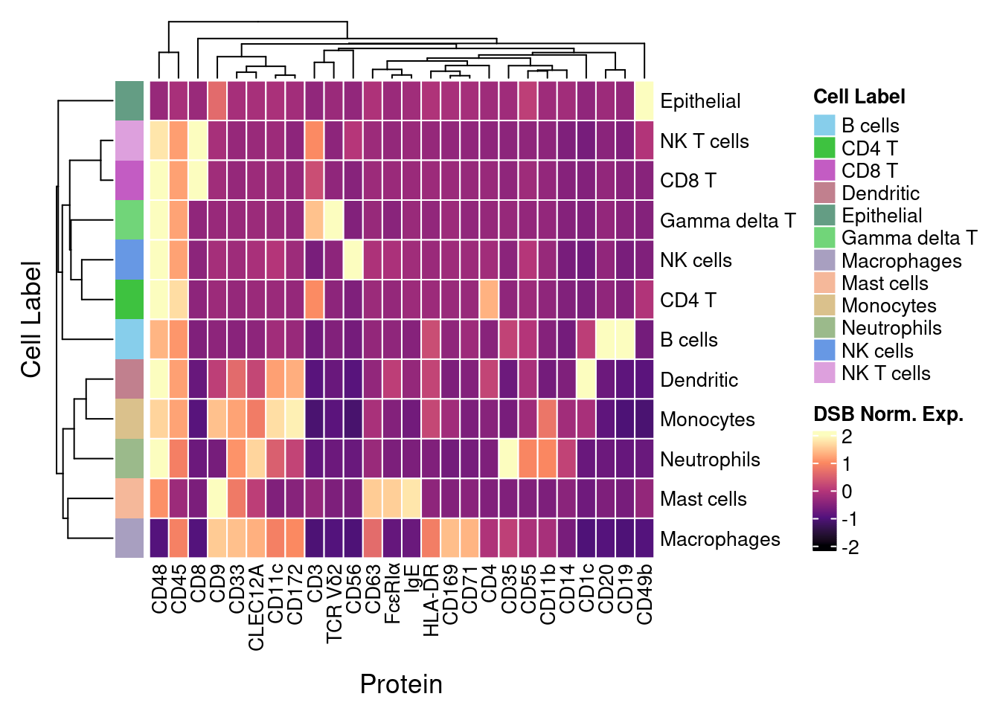
| Version | Author | Date |
|---|---|---|
| 143d61f | Jovana Maksimovic | 2022-05-19 |
layout = "AAAA
AAAA
BBBC
BBBC
DDDD
DDDD
EEEE
EEEE
EEEE"
((ggplot(data.frame(x = 1, y = 1), aes(x, y)) +
geom_point(colour = "white") +
theme_void()) +
(f1b + ggtitle("")) +
f1c +
f1d +
wrap_heatmap(f1e)) +
plot_layout(design = layout) +
plot_annotation(tag_levels = "A") &
theme(plot.tag = element_text(size = 14, face = "bold"))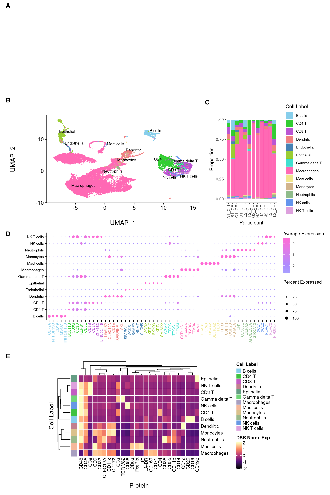
| Version | Author | Date |
|---|---|---|
| 143d61f | Jovana Maksimovic | 2022-05-19 |
sessioninfo::session_info()─ Session info ───────────────────────────────────────────────────────────────
setting value
version R version 4.1.0 (2021-05-18)
os CentOS Linux 7 (Core)
system x86_64, linux-gnu
ui X11
language (EN)
collate en_AU.UTF-8
ctype en_AU.UTF-8
tz Australia/Melbourne
date 2022-06-01
pandoc 2.14.0.3 @ /usr/lib/rstudio-server/bin/pandoc/ (via rmarkdown)
─ Packages ───────────────────────────────────────────────────────────────────
! package * version date (UTC) lib source
P abind 1.4-5 2016-07-21 [?] CRAN (R 4.1.0)
P annotate * 1.72.0 2021-10-26 [?] Bioconductor
P AnnotationDbi * 1.56.2 2021-11-09 [?] Bioconductor
P AnnotationFilter * 1.18.0 2021-10-26 [?] Bioconductor
P AnnotationHub * 3.2.0 2021-10-26 [?] Bioconductor
P assertthat 0.2.1 2019-03-21 [?] CRAN (R 4.1.0)
P backports 1.4.1 2021-12-13 [?] CRAN (R 4.1.0)
P beachmat 2.10.0 2021-10-26 [?] Bioconductor
P beeswarm 0.4.0 2021-06-01 [?] CRAN (R 4.1.0)
P Biobase * 2.54.0 2021-10-26 [?] Bioconductor
P BiocFileCache * 2.2.0 2021-10-26 [?] Bioconductor
P BiocGenerics * 0.40.0 2021-10-26 [?] Bioconductor
P BiocIO 1.4.0 2021-10-26 [?] Bioconductor
P BiocManager 1.30.16 2021-06-15 [?] CRAN (R 4.1.0)
P BiocNeighbors 1.12.0 2021-10-26 [?] Bioconductor
P BiocParallel * 1.28.3 2021-12-09 [?] Bioconductor
P BiocSingular 1.10.0 2021-10-26 [?] Bioconductor
P BiocVersion 3.14.0 2021-05-19 [?] Bioconductor
P biomaRt 2.50.1 2021-11-21 [?] Bioconductor
P Biostrings 2.62.0 2021-10-26 [?] Bioconductor
P bit 4.0.4 2020-08-04 [?] CRAN (R 4.1.0)
P bit64 4.0.5 2020-08-30 [?] CRAN (R 4.0.2)
P bitops 1.0-7 2021-04-24 [?] CRAN (R 4.0.2)
P blob 1.2.2 2021-07-23 [?] CRAN (R 4.1.0)
P bluster 1.4.0 2021-10-26 [?] Bioconductor
P bookdown 0.24 2021-09-02 [?] CRAN (R 4.1.0)
P broom 0.7.11 2022-01-03 [?] CRAN (R 4.1.0)
P bslib 0.3.1 2021-10-06 [?] CRAN (R 4.1.0)
P cachem 1.0.6 2021-08-19 [?] CRAN (R 4.1.0)
P callr 3.7.0 2021-04-20 [?] CRAN (R 4.1.0)
P cellranger 1.1.0 2016-07-27 [?] CRAN (R 4.1.0)
P Cepo * 1.0.0 2021-10-26 [?] Bioconductor
P circlize 0.4.13 2021-06-09 [?] CRAN (R 4.1.0)
P cli 3.1.0 2021-10-27 [?] CRAN (R 4.1.0)
P clue 0.3-60 2021-10-11 [?] CRAN (R 4.1.0)
P cluster 2.1.2 2021-04-17 [?] CRAN (R 4.1.0)
P codetools 0.2-18 2020-11-04 [?] CRAN (R 4.1.0)
P colorspace 2.0-2 2021-06-24 [?] CRAN (R 4.0.2)
P ComplexHeatmap 2.10.0 2021-10-26 [?] Bioconductor
P cowplot 1.1.1 2020-12-30 [?] CRAN (R 4.0.2)
P crayon 1.4.2 2021-10-29 [?] CRAN (R 4.1.0)
P curl 4.3.2 2021-06-23 [?] CRAN (R 4.1.0)
P data.table 1.14.2 2021-09-27 [?] CRAN (R 4.1.0)
P DBI 1.1.2 2021-12-20 [?] CRAN (R 4.1.0)
P dbplyr * 2.1.1 2021-04-06 [?] CRAN (R 4.1.0)
P DelayedArray 0.20.0 2021-10-26 [?] Bioconductor
P DelayedMatrixStats 1.16.0 2021-10-26 [?] Bioconductor
P deldir 1.0-6 2021-10-23 [?] CRAN (R 4.1.0)
P dendextend 1.15.2 2021-10-28 [?] CRAN (R 4.1.0)
P digest 0.6.29 2021-12-01 [?] CRAN (R 4.1.0)
P doParallel 1.0.16 2020-10-16 [?] CRAN (R 4.0.2)
P dplyr * 1.0.7 2021-06-18 [?] CRAN (R 4.1.0)
P dqrng 0.3.0 2021-05-01 [?] CRAN (R 4.1.0)
P DropletUtils * 1.14.1 2021-11-08 [?] Bioconductor
P edgeR * 3.36.0 2021-10-26 [?] Bioconductor
P ellipsis 0.3.2 2021-04-29 [?] CRAN (R 4.0.2)
P ensembldb * 2.18.2 2021-11-08 [?] Bioconductor
P evaluate 0.14 2019-05-28 [?] CRAN (R 4.0.2)
P fansi 1.0.0 2022-01-10 [?] CRAN (R 4.1.0)
P farver 2.1.0 2021-02-28 [?] CRAN (R 4.0.2)
P fastmap 1.1.0 2021-01-25 [?] CRAN (R 4.1.0)
P filelock 1.0.2 2018-10-05 [?] CRAN (R 4.1.0)
P fitdistrplus 1.1-6 2021-09-28 [?] CRAN (R 4.1.0)
P forcats * 0.5.1 2021-01-27 [?] CRAN (R 4.1.0)
P foreach 1.5.1 2020-10-15 [?] CRAN (R 4.0.2)
P fs 1.5.2 2021-12-08 [?] CRAN (R 4.1.0)
P future 1.23.0 2021-10-31 [?] CRAN (R 4.1.0)
P future.apply 1.8.1 2021-08-10 [?] CRAN (R 4.1.0)
P generics 0.1.1 2021-10-25 [?] CRAN (R 4.1.0)
GenomeInfoDb * 1.30.1 2022-01-30 [1] Bioconductor
P GenomeInfoDbData 1.2.7 2021-12-21 [?] Bioconductor
P GenomicAlignments 1.30.0 2021-10-26 [?] Bioconductor
P GenomicFeatures * 1.46.3 2021-12-30 [?] Bioconductor
P GenomicRanges * 1.46.1 2021-11-18 [?] Bioconductor
P GetoptLong 1.0.5 2020-12-15 [?] CRAN (R 4.0.2)
P getPass 0.2-2 2017-07-21 [?] CRAN (R 4.0.2)
P ggbeeswarm 0.6.0 2017-08-07 [?] CRAN (R 4.1.0)
P ggplot2 * 3.3.5 2021-06-25 [?] CRAN (R 4.0.2)
P ggrepel 0.9.1 2021-01-15 [?] CRAN (R 4.1.0)
P ggridges 0.5.3 2021-01-08 [?] CRAN (R 4.1.0)
P git2r 0.29.0 2021-11-22 [?] CRAN (R 4.1.0)
P glmGamPoi * 1.6.0 2021-10-26 [?] Bioconductor
P GlobalOptions 0.1.2 2020-06-10 [?] CRAN (R 4.1.0)
P globals 0.14.0 2020-11-22 [?] CRAN (R 4.0.2)
P glue * 1.6.0 2021-12-17 [?] CRAN (R 4.1.0)
P goftest 1.2-3 2021-10-07 [?] CRAN (R 4.1.0)
P graph * 1.72.0 2021-10-26 [?] Bioconductor
P gridExtra 2.3 2017-09-09 [?] CRAN (R 4.1.0)
P GSEABase * 1.56.0 2021-10-26 [?] Bioconductor
P gtable 0.3.0 2019-03-25 [?] CRAN (R 4.1.0)
P haven 2.4.3 2021-08-04 [?] CRAN (R 4.1.0)
P HDF5Array 1.22.1 2021-11-14 [?] Bioconductor
P here * 1.0.1 2020-12-13 [?] CRAN (R 4.0.2)
P highr 0.9 2021-04-16 [?] CRAN (R 4.1.0)
P hms 1.1.1 2021-09-26 [?] CRAN (R 4.1.0)
P htmltools 0.5.2 2021-08-25 [?] CRAN (R 4.1.0)
P htmlwidgets 1.5.4 2021-09-08 [?] CRAN (R 4.1.0)
P httpuv 1.6.5 2022-01-05 [?] CRAN (R 4.1.0)
P httr 1.4.2 2020-07-20 [?] CRAN (R 4.1.0)
P ica 1.0-2 2018-05-24 [?] CRAN (R 4.1.0)
P igraph 1.2.11 2022-01-04 [?] CRAN (R 4.1.0)
P interactiveDisplayBase 1.32.0 2021-10-26 [?] Bioconductor
P IRanges * 2.28.0 2021-10-26 [?] Bioconductor
P irlba 2.3.5 2021-12-06 [?] CRAN (R 4.1.0)
P iterators 1.0.13 2020-10-15 [?] CRAN (R 4.0.2)
P janitor * 2.1.0 2021-01-05 [?] CRAN (R 4.0.2)
P jquerylib 0.1.4 2021-04-26 [?] CRAN (R 4.1.0)
P jsonlite 1.7.2 2020-12-09 [?] CRAN (R 4.0.2)
P KEGGREST 1.34.0 2021-10-26 [?] Bioconductor
P KernSmooth 2.23-20 2021-05-03 [?] CRAN (R 4.1.0)
P knitr 1.37 2021-12-16 [?] CRAN (R 4.1.0)
P labeling 0.4.2 2020-10-20 [?] CRAN (R 4.0.2)
P later 1.3.0 2021-08-18 [?] CRAN (R 4.1.0)
P lattice 0.20-45 2021-09-22 [?] CRAN (R 4.1.0)
P lazyeval 0.2.2 2019-03-15 [?] CRAN (R 4.1.0)
P leiden 0.3.9 2021-07-27 [?] CRAN (R 4.1.0)
P lifecycle 1.0.1 2021-09-24 [?] CRAN (R 4.1.0)
P limma * 3.50.0 2021-10-26 [?] Bioconductor
P listenv 0.8.0 2019-12-05 [?] CRAN (R 4.1.0)
P lmtest 0.9-39 2021-11-07 [?] CRAN (R 4.1.0)
P locfit 1.5-9.4 2020-03-25 [?] CRAN (R 4.1.0)
P lubridate 1.8.0 2021-10-07 [?] CRAN (R 4.1.0)
P magrittr 2.0.1 2020-11-17 [?] CRAN (R 4.0.2)
P MASS 7.3-53.1 2021-02-12 [?] CRAN (R 4.0.2)
P Matrix * 1.4-0 2021-12-08 [?] CRAN (R 4.1.0)
P MatrixGenerics * 1.6.0 2021-10-26 [?] Bioconductor
P matrixStats * 0.61.0 2021-09-17 [?] CRAN (R 4.1.0)
P memoise 2.0.1 2021-11-26 [?] CRAN (R 4.1.0)
P metapod 1.2.0 2021-10-26 [?] Bioconductor
P mgcv 1.8-38 2021-10-06 [?] CRAN (R 4.1.0)
P mime 0.12 2021-09-28 [?] CRAN (R 4.1.0)
P miniUI 0.1.1.1 2018-05-18 [?] CRAN (R 4.1.0)
P modelr 0.1.8 2020-05-19 [?] CRAN (R 4.0.2)
P munsell 0.5.0 2018-06-12 [?] CRAN (R 4.1.0)
P nlme 3.1-153 2021-09-07 [?] CRAN (R 4.1.0)
P org.Hs.eg.db * 3.14.0 2021-12-21 [?] Bioconductor
P org.Mm.eg.db 3.14.0 2022-01-24 [?] Bioconductor
P paletteer * 1.4.0 2021-07-20 [?] CRAN (R 4.1.0)
P parallelly 1.30.0 2021-12-17 [?] CRAN (R 4.1.0)
P patchwork * 1.1.1 2020-12-17 [?] CRAN (R 4.0.2)
P pbapply 1.5-0 2021-09-16 [?] CRAN (R 4.1.0)
P pillar 1.6.4 2021-10-18 [?] CRAN (R 4.1.0)
P pkgconfig 2.0.3 2019-09-22 [?] CRAN (R 4.1.0)
P plotly 4.10.0 2021-10-09 [?] CRAN (R 4.1.0)
P plyr 1.8.6 2020-03-03 [?] CRAN (R 4.0.2)
P png 0.1-7 2013-12-03 [?] CRAN (R 4.1.0)
P polyclip 1.10-0 2019-03-14 [?] CRAN (R 4.1.0)
P prettyunits 1.1.1 2020-01-24 [?] CRAN (R 4.0.2)
P prismatic 1.1.0 2021-10-17 [?] CRAN (R 4.1.0)
P processx 3.5.2 2021-04-30 [?] CRAN (R 4.1.0)
P progress 1.2.2 2019-05-16 [?] CRAN (R 4.1.0)
P promises 1.2.0.1 2021-02-11 [?] CRAN (R 4.0.2)
P ProtGenerics 1.26.0 2021-10-26 [?] Bioconductor
P ps 1.6.0 2021-02-28 [?] CRAN (R 4.1.0)
P purrr * 0.3.4 2020-04-17 [?] CRAN (R 4.0.2)
P R.methodsS3 1.8.1 2020-08-26 [?] CRAN (R 4.0.2)
P R.oo 1.24.0 2020-08-26 [?] CRAN (R 4.0.2)
P R.utils 2.11.0 2021-09-26 [?] CRAN (R 4.1.0)
P R6 2.5.1 2021-08-19 [?] CRAN (R 4.1.0)
P RANN 2.6.1 2019-01-08 [?] CRAN (R 4.1.0)
P rappdirs 0.3.3 2021-01-31 [?] CRAN (R 4.0.2)
P RColorBrewer 1.1-2 2014-12-07 [?] CRAN (R 4.0.2)
P Rcpp 1.0.7 2021-07-07 [?] CRAN (R 4.1.0)
P RcppAnnoy 0.0.19 2021-07-30 [?] CRAN (R 4.1.0)
RCurl 1.98-1.6 2022-02-08 [1] CRAN (R 4.1.0)
P readr * 2.1.1 2021-11-30 [?] CRAN (R 4.1.0)
P readxl 1.3.1 2019-03-13 [?] CRAN (R 4.1.0)
P rematch2 2.1.2 2020-05-01 [?] CRAN (R 4.1.0)
P renv 0.15.0-14 2022-01-10 [?] Github (rstudio/renv@a3b90eb)
P reprex 2.0.1 2021-08-05 [?] CRAN (R 4.1.0)
P reshape2 1.4.4 2020-04-09 [?] CRAN (R 4.1.0)
P restfulr 0.0.13 2017-08-06 [?] CRAN (R 4.1.0)
P reticulate 1.22 2021-09-17 [?] CRAN (R 4.1.0)
P rhdf5 2.38.0 2021-10-26 [?] Bioconductor
P rhdf5filters 1.6.0 2021-10-26 [?] Bioconductor
P Rhdf5lib 1.16.0 2021-10-26 [?] Bioconductor
P rjson 0.2.21 2022-01-09 [?] CRAN (R 4.1.0)
P rlang 0.4.12 2021-10-18 [?] CRAN (R 4.1.0)
P rmarkdown 2.11 2021-09-14 [?] CRAN (R 4.1.0)
P ROCR 1.0-11 2020-05-02 [?] CRAN (R 4.1.0)
P rpart 4.1-15 2019-04-12 [?] CRAN (R 4.1.0)
P rprojroot 2.0.2 2020-11-15 [?] CRAN (R 4.0.2)
P Rsamtools 2.10.0 2021-10-26 [?] Bioconductor
P RSpectra 0.16-0 2019-12-01 [?] CRAN (R 4.1.0)
P RSQLite 2.2.9 2021-12-06 [?] CRAN (R 4.1.0)
P rstudioapi 0.13 2020-11-12 [?] CRAN (R 4.0.2)
P rsvd 1.0.5 2021-04-16 [?] CRAN (R 4.1.0)
P rtracklayer 1.54.0 2021-10-26 [?] Bioconductor
P Rtsne 0.15 2018-11-10 [?] CRAN (R 4.1.0)
P rvest 1.0.2 2021-10-16 [?] CRAN (R 4.1.0)
P S4Vectors * 0.32.3 2021-11-21 [?] Bioconductor
P sass 0.4.0 2021-05-12 [?] CRAN (R 4.1.0)
P ScaledMatrix 1.2.0 2021-10-26 [?] Bioconductor
P scales * 1.1.1 2020-05-11 [?] CRAN (R 4.0.2)
P scater * 1.22.0 2021-10-26 [?] Bioconductor
P scattermore 0.7 2020-11-24 [?] CRAN (R 4.1.0)
P scran * 1.22.1 2021-11-14 [?] Bioconductor
P sctransform 0.3.3 2022-01-13 [?] CRAN (R 4.1.0)
P scuttle * 1.4.0 2021-10-26 [?] Bioconductor
P sessioninfo 1.2.2 2021-12-06 [?] CRAN (R 4.1.0)
P Seurat * 4.0.6 2021-12-16 [?] CRAN (R 4.1.0)
P SeuratObject * 4.0.4 2021-11-23 [?] CRAN (R 4.1.0)
P shape 1.4.6 2021-05-19 [?] CRAN (R 4.1.0)
P shiny 1.7.1 2021-10-02 [?] CRAN (R 4.1.0)
P SingleCellExperiment * 1.16.0 2021-10-26 [?] Bioconductor
P snakecase 0.11.0 2019-05-25 [?] CRAN (R 4.0.2)
P sparseMatrixStats 1.6.0 2021-10-26 [?] Bioconductor
P spatstat.core 2.3-2 2021-11-26 [?] CRAN (R 4.1.0)
P spatstat.data 2.1-2 2021-12-17 [?] CRAN (R 4.1.0)
P spatstat.geom 2.3-1 2021-12-10 [?] CRAN (R 4.1.0)
P spatstat.sparse 2.1-0 2021-12-17 [?] CRAN (R 4.1.0)
P spatstat.utils 2.3-0 2021-12-12 [?] CRAN (R 4.1.0)
P speckle * 0.0.3 2022-03-09 [?] Github (Oshlack/speckle@fc07773)
P statmod 1.4.36 2021-05-10 [?] CRAN (R 4.1.0)
P stringi 1.7.6 2021-11-29 [?] CRAN (R 4.1.0)
P stringr * 1.4.0 2019-02-10 [?] CRAN (R 4.0.2)
P SummarizedExperiment * 1.24.0 2021-10-26 [?] Bioconductor
P survival 3.2-13 2021-08-24 [?] CRAN (R 4.1.0)
P tensor 1.5 2012-05-05 [?] CRAN (R 4.1.0)
P tibble * 3.1.6 2021-11-07 [?] CRAN (R 4.1.0)
P tidyHeatmap * 1.7.0 2022-05-13 [?] Github (stemangiola/tidyHeatmap@241aec2)
P tidyr * 1.1.4 2021-09-27 [?] CRAN (R 4.1.0)
P tidyselect 1.1.1 2021-04-30 [?] CRAN (R 4.1.0)
P tidyverse * 1.3.1 2021-04-15 [?] CRAN (R 4.1.0)
P tzdb 0.2.0 2021-10-27 [?] CRAN (R 4.1.0)
P utf8 1.2.2 2021-07-24 [?] CRAN (R 4.1.0)
P uwot 0.1.11 2021-12-02 [?] CRAN (R 4.1.0)
P vctrs 0.3.8 2021-04-29 [?] CRAN (R 4.0.2)
P vipor 0.4.5 2017-03-22 [?] CRAN (R 4.1.0)
P viridis 0.6.2 2021-10-13 [?] CRAN (R 4.1.0)
P viridisLite 0.4.0 2021-04-13 [?] CRAN (R 4.0.2)
P vroom 1.5.7 2021-11-30 [?] CRAN (R 4.1.0)
P whisker 0.4 2019-08-28 [?] CRAN (R 4.0.2)
P withr 2.4.3 2021-11-30 [?] CRAN (R 4.1.0)
P workflowr * 1.7.0 2021-12-21 [?] CRAN (R 4.1.0)
P xfun 0.29 2021-12-14 [?] CRAN (R 4.1.0)
P XML * 3.99-0.8 2021-09-17 [?] CRAN (R 4.1.0)
P xml2 1.3.3 2021-11-30 [?] CRAN (R 4.1.0)
P xtable 1.8-4 2019-04-21 [?] CRAN (R 4.1.0)
P XVector 0.34.0 2021-10-26 [?] Bioconductor
P yaml 2.2.1 2020-02-01 [?] CRAN (R 4.0.2)
P zlibbioc 1.40.0 2021-10-26 [?] Bioconductor
P zoo 1.8-9 2021-03-09 [?] CRAN (R 4.1.0)
[1] /oshlack_lab/jovana.maksimovic/projects/MCRI/melanie.neeland/paed-cf-cite-seq/renv/library/R-4.1/x86_64-pc-linux-gnu
[2] /config/binaries/R/4.1.0/lib64/R/library
P ── Loaded and on-disk path mismatch.
──────────────────────────────────────────────────────────────────────────────
sessionInfo()R version 4.1.0 (2021-05-18)
Platform: x86_64-pc-linux-gnu (64-bit)
Running under: CentOS Linux 7 (Core)
Matrix products: default
BLAS: /config/binaries/R/4.1.0/lib64/R/lib/libRblas.so
LAPACK: /config/binaries/R/4.1.0/lib64/R/lib/libRlapack.so
locale:
[1] LC_CTYPE=en_AU.UTF-8 LC_NUMERIC=C
[3] LC_TIME=en_AU.UTF-8 LC_COLLATE=en_AU.UTF-8
[5] LC_MONETARY=en_AU.UTF-8 LC_MESSAGES=en_AU.UTF-8
[7] LC_PAPER=en_AU.UTF-8 LC_NAME=C
[9] LC_ADDRESS=C LC_TELEPHONE=C
[11] LC_MEASUREMENT=en_AU.UTF-8 LC_IDENTIFICATION=C
attached base packages:
[1] stats4 stats graphics grDevices datasets utils methods
[8] base
other attached packages:
[1] speckle_0.0.3 scales_1.1.1
[3] janitor_2.1.0 BiocParallel_1.28.3
[5] glmGamPoi_1.6.0 org.Hs.eg.db_3.14.0
[7] ensembldb_2.18.2 AnnotationFilter_1.18.0
[9] GenomicFeatures_1.46.3 paletteer_1.4.0
[11] Cepo_1.0.0 GSEABase_1.56.0
[13] graph_1.72.0 annotate_1.72.0
[15] XML_3.99-0.8 AnnotationDbi_1.56.2
[17] tidyHeatmap_1.7.0 AnnotationHub_3.2.0
[19] BiocFileCache_2.2.0 dbplyr_2.1.1
[21] patchwork_1.1.1 edgeR_3.36.0
[23] limma_3.50.0 Matrix_1.4-0
[25] scater_1.22.0 scran_1.22.1
[27] scuttle_1.4.0 DropletUtils_1.14.1
[29] SingleCellExperiment_1.16.0 SummarizedExperiment_1.24.0
[31] Biobase_2.54.0 GenomicRanges_1.46.1
[33] GenomeInfoDb_1.30.1 IRanges_2.28.0
[35] S4Vectors_0.32.3 BiocGenerics_0.40.0
[37] MatrixGenerics_1.6.0 matrixStats_0.61.0
[39] glue_1.6.0 here_1.0.1
[41] forcats_0.5.1 stringr_1.4.0
[43] dplyr_1.0.7 purrr_0.3.4
[45] readr_2.1.1 tidyr_1.1.4
[47] tibble_3.1.6 ggplot2_3.3.5
[49] tidyverse_1.3.1 SeuratObject_4.0.4
[51] Seurat_4.0.6 workflowr_1.7.0
loaded via a namespace (and not attached):
[1] rsvd_1.0.5 ica_1.0-2
[3] ps_1.6.0 Rsamtools_2.10.0
[5] foreach_1.5.1 lmtest_0.9-39
[7] rprojroot_2.0.2 crayon_1.4.2
[9] spatstat.core_2.3-2 MASS_7.3-53.1
[11] rhdf5filters_1.6.0 nlme_3.1-153
[13] backports_1.4.1 reprex_2.0.1
[15] rlang_0.4.12 XVector_0.34.0
[17] ROCR_1.0-11 readxl_1.3.1
[19] irlba_2.3.5 callr_3.7.0
[21] filelock_1.0.2 rjson_0.2.21
[23] bit64_4.0.5 sctransform_0.3.3
[25] parallel_4.1.0 processx_3.5.2
[27] vipor_0.4.5 spatstat.sparse_2.1-0
[29] spatstat.geom_2.3-1 haven_2.4.3
[31] tidyselect_1.1.1 fitdistrplus_1.1-6
[33] zoo_1.8-9 GenomicAlignments_1.30.0
[35] org.Mm.eg.db_3.14.0 xtable_1.8-4
[37] magrittr_2.0.1 evaluate_0.14
[39] cli_3.1.0 zlibbioc_1.40.0
[41] rstudioapi_0.13 miniUI_0.1.1.1
[43] whisker_0.4 bslib_0.3.1
[45] rpart_4.1-15 shiny_1.7.1
[47] BiocSingular_1.10.0 xfun_0.29
[49] clue_0.3-60 cluster_2.1.2
[51] KEGGREST_1.34.0 interactiveDisplayBase_1.32.0
[53] ggrepel_0.9.1 listenv_0.8.0
[55] dendextend_1.15.2 Biostrings_2.62.0
[57] png_0.1-7 future_1.23.0
[59] withr_2.4.3 bitops_1.0-7
[61] plyr_1.8.6 cellranger_1.1.0
[63] dqrng_0.3.0 pillar_1.6.4
[65] GlobalOptions_0.1.2 cachem_1.0.6
[67] fs_1.5.2 GetoptLong_1.0.5
[69] DelayedMatrixStats_1.16.0 vctrs_0.3.8
[71] ellipsis_0.3.2 generics_0.1.1
[73] tools_4.1.0 beeswarm_0.4.0
[75] munsell_0.5.0 DelayedArray_0.20.0
[77] fastmap_1.1.0 compiler_4.1.0
[79] abind_1.4-5 httpuv_1.6.5
[81] rtracklayer_1.54.0 sessioninfo_1.2.2
[83] plotly_4.10.0 GenomeInfoDbData_1.2.7
[85] gridExtra_2.3 lattice_0.20-45
[87] deldir_1.0-6 utf8_1.2.2
[89] later_1.3.0 prismatic_1.1.0
[91] jsonlite_1.7.2 ScaledMatrix_1.2.0
[93] pbapply_1.5-0 sparseMatrixStats_1.6.0
[95] renv_0.15.0-14 lazyeval_0.2.2
[97] promises_1.2.0.1 doParallel_1.0.16
[99] R.utils_2.11.0 goftest_1.2-3
[101] spatstat.utils_2.3-0 reticulate_1.22
[103] rmarkdown_2.11 cowplot_1.1.1
[105] statmod_1.4.36 Rtsne_0.15
[107] uwot_0.1.11 igraph_1.2.11
[109] HDF5Array_1.22.1 survival_3.2-13
[111] yaml_2.2.1 htmltools_0.5.2
[113] memoise_2.0.1 BiocIO_1.4.0
[115] locfit_1.5-9.4 viridisLite_0.4.0
[117] digest_0.6.29 assertthat_0.2.1
[119] mime_0.12 rappdirs_0.3.3
[121] RSQLite_2.2.9 future.apply_1.8.1
[123] data.table_1.14.2 blob_1.2.2
[125] R.oo_1.24.0 splines_4.1.0
[127] labeling_0.4.2 rematch2_2.1.2
[129] Rhdf5lib_1.16.0 ProtGenerics_1.26.0
[131] RCurl_1.98-1.6 broom_0.7.11
[133] hms_1.1.1 modelr_0.1.8
[135] rhdf5_2.38.0 colorspace_2.0-2
[137] BiocManager_1.30.16 ggbeeswarm_0.6.0
[139] shape_1.4.6 sass_0.4.0
[141] Rcpp_1.0.7 bookdown_0.24
[143] RANN_2.6.1 circlize_0.4.13
[145] fansi_1.0.0 tzdb_0.2.0
[147] parallelly_1.30.0 R6_2.5.1
[149] grid_4.1.0 ggridges_0.5.3
[151] lifecycle_1.0.1 bluster_1.4.0
[153] curl_4.3.2 leiden_0.3.9
[155] jquerylib_0.1.4 snakecase_0.11.0
[157] RcppAnnoy_0.0.19 RColorBrewer_1.1-2
[159] iterators_1.0.13 htmlwidgets_1.5.4
[161] beachmat_2.10.0 polyclip_1.10-0
[163] biomaRt_2.50.1 rvest_1.0.2
[165] ComplexHeatmap_2.10.0 mgcv_1.8-38
[167] globals_0.14.0 codetools_0.2-18
[169] lubridate_1.8.0 metapod_1.2.0
[171] getPass_0.2-2 prettyunits_1.1.1
[173] RSpectra_0.16-0 R.methodsS3_1.8.1
[175] gtable_0.3.0 DBI_1.1.2
[177] git2r_0.29.0 tensor_1.5
[179] httr_1.4.2 highr_0.9
[181] KernSmooth_2.23-20 vroom_1.5.7
[183] stringi_1.7.6 progress_1.2.2
[185] reshape2_1.4.4 farver_2.1.0
[187] viridis_0.6.2 xml2_1.3.3
[189] BiocNeighbors_1.12.0 restfulr_0.0.13
[191] scattermore_0.7 BiocVersion_3.14.0
[193] bit_4.0.4 spatstat.data_2.1-2
[195] pkgconfig_2.0.3 knitr_1.37